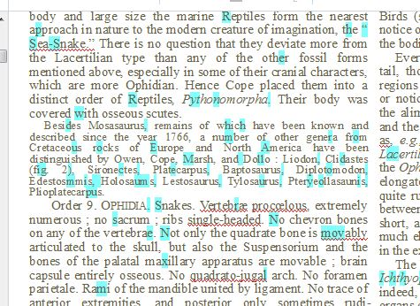

Changes made to the document within ABBYY FineReader will
carry through the entire production process, overwriting everything done at later
stages. Consider the OCR-Project files then as the "master"
files for the production stage.
Figure: The Text pane

Note: Given the volume of pages involved, it is not practical to read every page
word-for-word. At the same time, there is much to be gained from quickly scanning a
page and correcting errors you notice in the process of doing page recognition in
AFR.
The Text pane highlights words not in its dictionary with
a red underscore. If you click in the Text pane, both
Zoom and Image panes display the
original text, making a quick correction easy.
AFR use a cyan highlight to indicate
low-confidence characters, that is, characters it is unsure about. Scan these
quickly and correct them if necessary.
End-of-line hyphens are supposed to be removed, but AFR is inconsistent and frequently you will see them
still in place. Correct them if you have time, but do not worry too much about
them. At a later stage, we can automatically correct them.